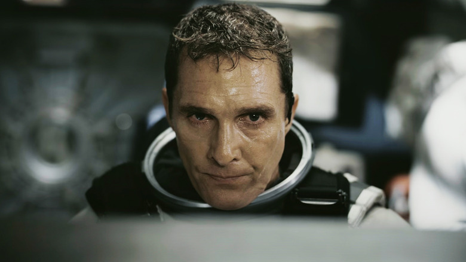

REPARTO PRINCIPAL

Matthew McConaughey como Joseph Cooper
McConaughey interpreta a Cooper, un ex piloto de pruebas de la NASA y brillante ingeniero que, debido a la crisis mundial, se ha visto obligado a trabajar como granjero para asegurar la supervivencia de su familia. Es un hombre de ciencia, pero con un profundo amor por sus hijos, especialmente por su hija Murph. Se convierte en el piloto de la nave Endurance, cargando sobre sus hombros la inmensa responsabilidad de encontrar un nuevo hogar para la humanidad, sabiendo que el viaje le costará un tiempo precioso lejos de su familia.

Anne Hathaway como la Dra. Amelia Brand
Anne Hathaway interpreta a la Dra. Amelia Brand, una brillante científica y bióloga de la NASA. Hija del Profesor Brand, es una de las mentes principales detrás de la Misión Lázaro. Amelia es pragmática y está completamente dedicada a la misión de salvar a la especie humana, incluso si eso significa dejar atrás la Tierra para siempre. A lo largo del viaje, sus convicciones científicas se verán puestas a prueba frente al poder del amor y la conexión humana.

Michael Caine como el Profesor John Brand
El legendario Michael Caine interpreta al Profesor Brand, el director del proyecto secreto de la NASA. Es la mente maestra detrás del plan para salvar a la humanidad utilizando el agujero de gusano. Un hombre que carga con el peso del mundo y con secretos muy oscuros sobre la viabilidad de los diferentes planes de supervivencia (el "Plan A" y el "Plan B"). Es él quien convence a Cooper de emprender este viaje sin retorno asegurado.

Matt Damon como el Dr. Mann
Damon interpreta al Dr. Mann, considerado "el mejor de nosotros" por el Profesor Brand. Fue el líder de las misiones originales Lázaro y el primero en cruzar el agujero de gusano años atrás. Su planeta parece ser uno de los más prometedores para albergar vida, pero la tripulación de la Endurance descubrirá que la soledad extrema y la desesperación por sobrevivir pueden quebrar incluso a las mentes más brillantes, convirtiéndolo en un antagonista inesperado en la historia.

Mackenzie Foy como Murphy "Murph" Cooper (Joven)
Mackenzie Foy interpreta a la versión infantil de Murph, la hija menor de Cooper. Es una niña extremadamente inteligente, curiosa y muy unida a su padre, con quien comparte la pasión por la ciencia y el espacio. Su habitación se convierte en el epicentro de las anomalías gravitacionales que ella inicialmente cree que son mensajes de "un fantasma". La devastadora separación de su padre cuando él debe partir en la misión Lázaro es uno de los momentos más emotivos y fundamentales de la película, marcando el resentimiento y el motor del personaje para el resto de su vida.

Jessica Chastain como Murphy "Murph" Cooper (Adulta)
Chastain interpreta a la versión adulta de la hija de Cooper. Heredó la mente brillante y curiosa de su padre. Tras la partida de Cooper, Murph dedica su vida a resolver la ecuación de la gravedad que su padre dejó pendiente, trabajando junto al Profesor Brand en la Tierra. Su resentimiento por el abandono de su padre y su incansable búsqueda de una solución para salvar a los que quedaron en la Tierra son el motor emocional de gran parte de la historia.

Timothée Chalamet como Tom Cooper (Joven)
Chalamet interpreta a la versión adolescente del hijo mayor de Cooper. A diferencia de su hermana Murph, Tom es mucho más pragmático y acepta desde el principio su destino en un mundo agrícola. Se enorgullece de aprender los oficios de la granja y busca constantemente la aprobación de su padre. Aunque la partida de Cooper le duele, él se enfoca en cuidar la tierra y mantener vivo el legado familiar frente a la catástrofe global que se avecina.

Casey Affleck como Tom Cooper (Adulto)
Affleck da vida a Tom en su etapa adulta, habiendo asumido el control total de la granja tras la muerte de su abuelo. Su personaje representa a la humanidad que se resigna a sobrevivir día a día en un mundo que agoniza. Se vuelve un hombre terco y arraigado a su hogar, al punto de poner en riesgo la salud de su propia esposa e hijo debido a las letales tormentas de polvo, negándose a abandonar la casa por la promesa de que su padre algún día regresaría allí.